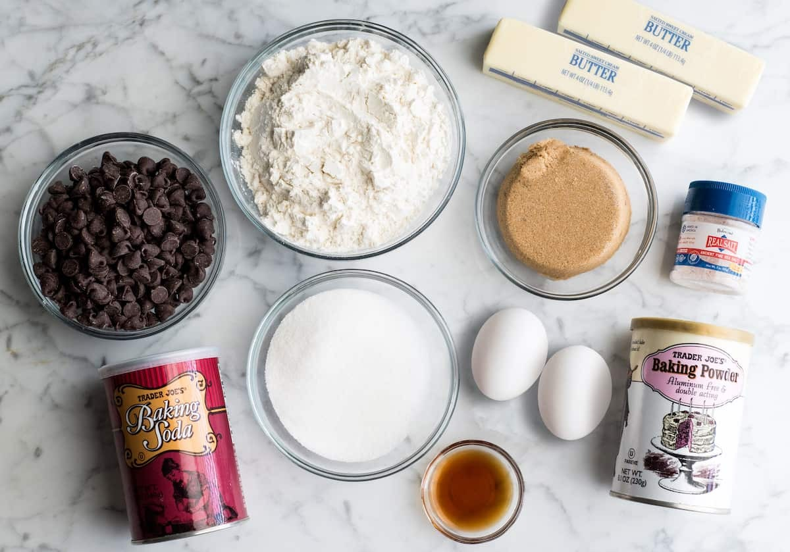
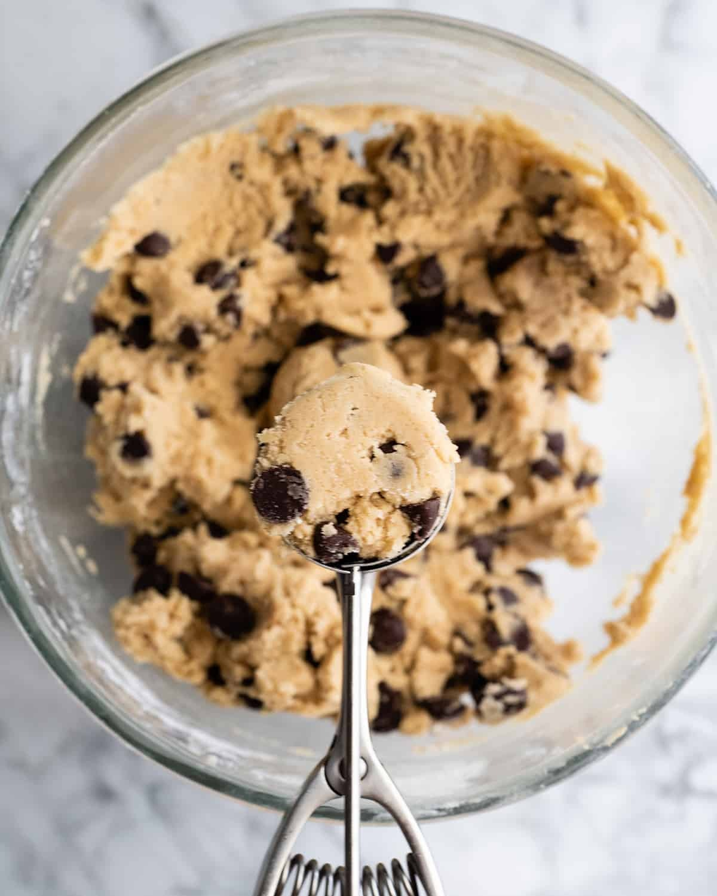
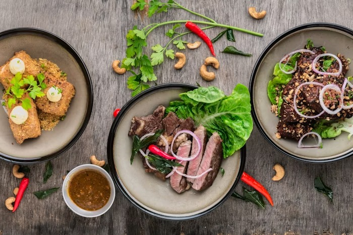
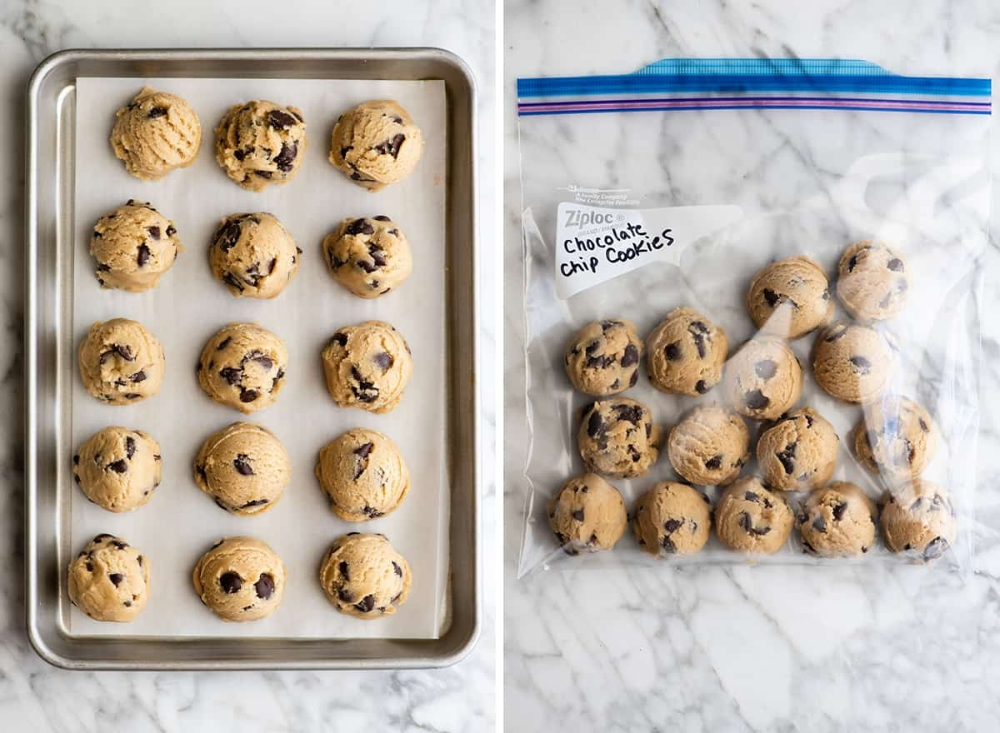

This classic chocolate chip cookie recipe yields soft, chewy cookies
with a perfect balance of sweetness and chocolate. Ideal for any
occasion, these cookies are sure to be a hit with family and friends.
Enjoy these delicious, chewy chocolate chip cookies! Perfect for any
occasion and easy to make.
Recipe Information
Prep Time: 15 minutes
Cook Time: 12 minutes
Yield: About 24 cookies
Category: Dessert
Cuisine: American
Cooking Method: Baking
Difficult level: Beginner
Ingredients
2 1/4 cups all-purpose flour
1/2 teaspoon baking soda
1 cup unsalted butter, room temperature
1/2 cup granulated sugar
1 cup packed light-brown sugar
1 teaspoon salt
2 teaspoons pure vanilla extract
2 large eggs
2 cups semisweet and/or milk chocolate chips
Ingredient Image

Instructions
Preheat your oven to 350°F (175°C). Line baking sheets with
parchment paper.
Cream together the butter, white sugar, and brown sugar until
smooth.
Beat in the eggs one at a time, then stir in the vanilla.
Combine flour, baking soda, baking powder, and salt; gradually blend
into the creamed mixture.
Stir in the chocolate chips by hand using a wooden spoon.
Drop dough by rounded tablespoonfuls onto the prepared baking
sheets.
Bake for 10-12 minutes, or until edges are nicely browned.
Cool on baking sheets for a few minutes before transferring to wire
racks to cool completely.
Preparing Image

Serving Suggestions
Serve warm with a glass of cold milk.
Store leftovers in an airtight container for up to a week.
Finished Image

Tip: For extra chewy cookies, slightly underbake and
let them finish setting on the baking sheet.
Nutrition Information
Calories: 150 per cookie
Total Fat: 7g
Saturated Fat: 4g
Cholesterol: 20mg
Sodium: 100mg
Total Carbohydrates: 20g
Dietary Fiber: 1g
Sugars: 10g
Protein: 2g
Packed chocolate cookies

Packed chocolate cookies are a delightful treat for any occasion!